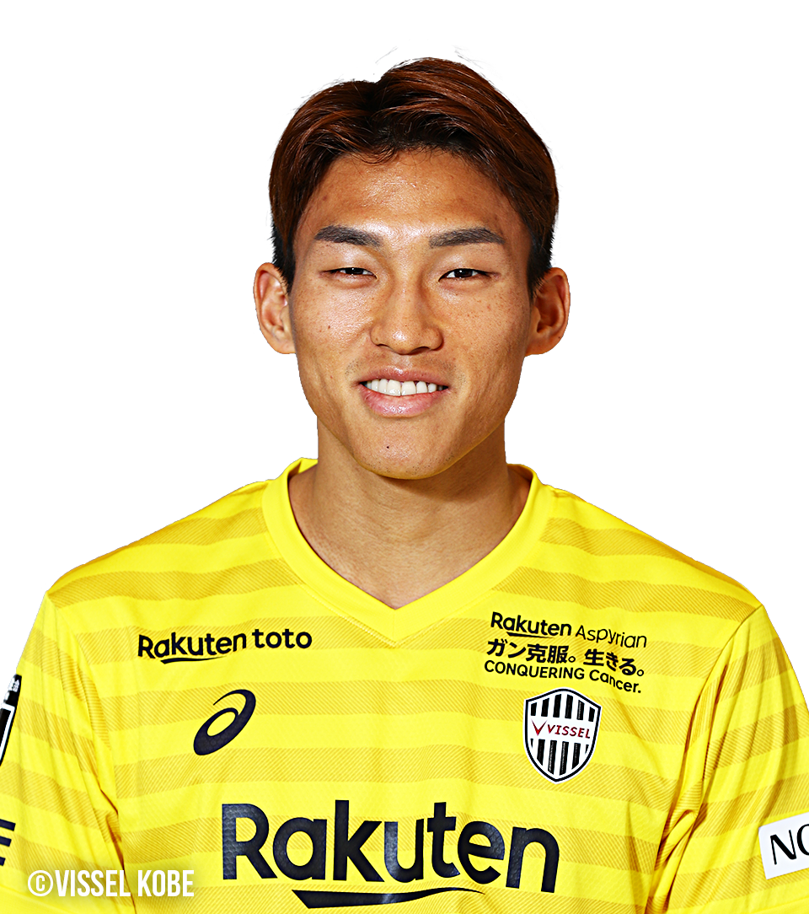
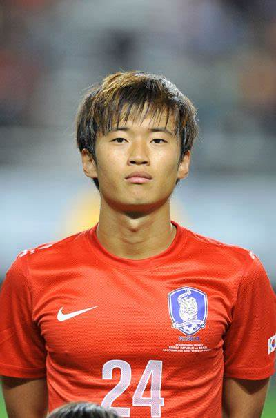

Seung-Gyu Kim
Kim Seung-gyu (en coréen : 김승규), né le 30 septembre 1990 à Ulsan en Corée du Sud, est un footballeur international sud-coréen, qui évolue au poste de gardien de but. Il joue dans le club du Al-Shabab.

Jin-Su Kim
Kim Jin-su (Korean: 김진수; born 13 June 1992) is a South Korean footballer who plays for Jeonbuk Hyundai Motors, on loan from Al-Nassr and the South Korea national team, as a left-back.

Ui-Jo Hwang
Hwang Ui-jo (en coréen : 황의조/黃義助), né le 28 août 1992 à Seongnam, est un footballeur international sud-coréen. Il évolue au poste d'attaquant à l'Olympiakos, en prêt de Nottingham Forest.


Excellent site avec les informations néseassaires